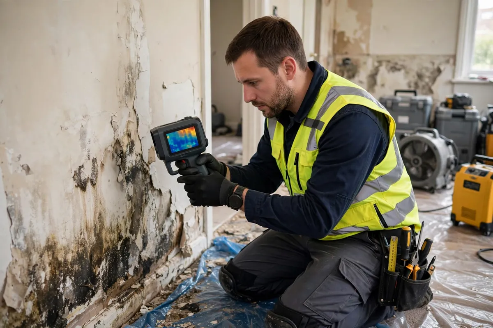

Guides · Oct 22, 2026 · 6 min read
How to Prevent Water Damage in Your Hollywood Home
Most water damage in Hollywood does not arrive as a disaster. It starts as a drip nobody hears, a hose nobody has looked at in six years, a drain line slowly clogging with algae. By the time it announces itself — a stained ceiling, a warped floor, a water bill that doubled — the cheap fix window has usually closed. The good news: the large majority of these jobs are preventable with a handful of checks, most of them free, done a couple of times a year.

This is the prevention list our crews wish every homeowner followed. It is written for Hollywood, FL specifically — slab-on-grade homes, tile roofs, year-round air conditioning, and a rainy season that tests every weak point from May through October. If you have ever wondered how to prevent water damage, Hollywood's list starts here — with the roof, the hoses, and the AC drain line.
Start With the Roof and Gutters
Your roof is the largest water entry point you own. Once a year — ideally in spring, before rainy season — look for cracked or slipped tiles, failed flashing around vents and skylights, and ponding water on flat or low-slope sections. After any major storm, a quick look in the attic for daylight, damp insulation, or new staining catches leaks while they are still small. Keep gutters and downspouts clear and make sure downspouts dump water away from the foundation, not against it. If you already see ceiling stains, that is no longer prevention — it is an active leak, and our guide to roof leak cleanup in Hollywood explains what happens next.
Your AC Makes Water Every Day
In South Florida, your air conditioner is a water source that runs almost year-round. The condensate drain line clogs with algae and slime, the drain pan overflows, and the first sign is often a ceiling stain or a closet floor that feels damp. Flush the condensate line with a cup of vinegar every few months, confirm the float switch actually shuts the unit off when the pan fills, and check the pan itself for rust or standing water. Of all the calls we see, HVAC condensate overflow cleanup is the one homeowners are most surprised by — and the easiest to prevent.
Hoses, Heaters, and the Laundry Room
Rubber washing machine hoses are a countdown timer. Replace them with braided steel lines roughly every five years, and turn the supply valves off when you travel for more than a few days. Check the water heater’s age — in Hollywood’s water conditions, units past 10–12 years deserve a replacement conversation before they make the decision for you — and make sure it sits in a drain pan with the temperature-and-pressure valve unobstructed. While you are there, look under every sink and behind the dishwasher and refrigerator ice-maker line for dampness, corrosion, or slow drips. Our pages on appliance leak cleanup and water heater leak cleanup exist because these small lines cause an outsized share of the damage we document.
Watch for Slab Leak Warning Signs
Most Hollywood homes sit on a concrete slab with plumbing underneath it, which means a leak can run for weeks before it shows. Treat these as alarms, not curiosities: a water bill that jumps with no change in use, a warm patch on tile or wood flooring, the sound of running water when everything is off, or new cracks in floor grout. Caught at the clue stage, slab leak detection and cleanup is a contained job. Caught months later, it can mean flooring, baseboards, and wall bases across several rooms.
Bathrooms and Kitchens: The Slow-Drip Tour
Twice a year, do a slow lap of the wet rooms. Run your hand along every supply line and drain under every sink. Press the floor around each toilet base — softness or rocking means the wax ring may be leaking into the subfloor. Re-caulk tub and shower edges where the bead has cracked or pulled away, and regrout tile where grout has crumbled; both are cheap barriers against water migrating into walls. Look inside vanity cabinets for the musty smell that means moisture is already there. Slow drips rarely need a crew — they need a wrench and twenty minutes. The ones that get ignored become plumbing leak cleanup jobs.
Storm-Season Prep for Hollywood Homes
Before June, work through the storm list: the roof check above, clearing yard and street drains near your property, knowing exactly where your main water shutoff is (and that it turns), and photographing each room and its contents for insurance records. Then review the policy itself. Standard homeowners insurance does not cover rising floodwater — that takes a separate flood policy — and many Florida policies cap water damage under a limited endorsement. You can read how both work in our guide to water damage insurance coverage in Florida, and if a storm wins anyway, that is where flood cleanup comes in.
Frequently Asked Questions
How often should I check my home for leaks?
Do the full tour twice a year — roof, AC drain line, appliance hoses, under-sink lines, and toilet bases — and add one extra check just before rainy season. In Hollywood’s climate, moisture problems grow faster than almost anywhere else in the country, so a six-month gap between checks is about the longest you want.
What is the most common preventable cause of water damage in Hollywood homes?
Two tie for first: clogged AC condensate lines that overflow into ceilings and closets, and aging appliance supply hoses — washing machines especially — that split without warning. Both are cheap to prevent and expensive to ignore, which is why they get checked first.
Are water leak detectors worth it?
For most Hollywood homes, yes — especially condos, second homes, and any house that sits empty part of the year. A simple sensor under the water heater and washing machine costs little; systems with automatic shutoff cost more but can turn a burst line into a puddle instead of a restoration job. They do not replace the twice-a-year tour, but they watch the house when you cannot.
What Prevention Can’t Stop
Prevention shrinks the risk; it does not erase it. Pipes still burst at 2 a.m., supply lines still fail inside walls, and a stalled tropical system can drop more rain than any drainage handles. Your second line of defense is speed: damage roughly doubles with every day materials stay wet, and mold can start within 24–48 hours in this climate. Save our number somewhere you can find it with wet hands — (754) 294-7959 — and if you ever find water where it should not be, shut the source off if you can do it safely and call. We will tell you honestly what the next step should be.